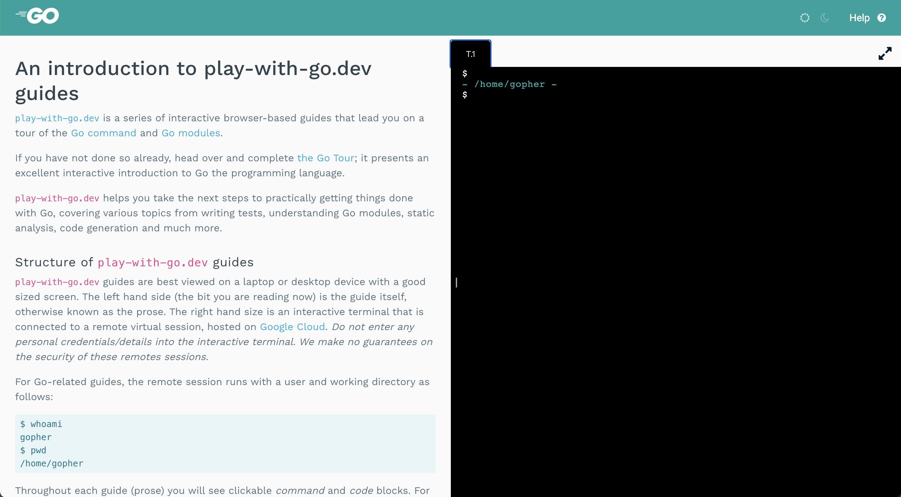

Play with Go
在开始学习 Go 语言之后，我发现 Go 语言对于初学者实在是太友好了。
Go 语言的文档很全面，可以说，在开始学习 Go 语言的时候，直接通过 Go 的文档开始就可以了，比如从 A tour of Go ， 就是一份很不错的入门教程，可以直接在网页端的交互式学习，都不需要在本地安装 Go 的环境，而且里面的知识点覆盖的很全面，跟完整个教程之后，对 Go 就有了一个基本的了解。
还有 Go blog 也很很不错，Go 语言的最新动态，版本的发布，特性的更新，都会第一时间在这里更新。
当学完 A tour of Go 之后，需要开始进一步的学习，play-with-go 是一个不错的教程。这个教程可以看做是 A tour of Go 的进阶版。
这也是一个网页版的交互式教程：

左边是一个教程，包含一个个程序的片段和讲解，右边是一个交互式的命令行，这个命令行其实是 Google cloud 上的一台机器，每个用户使用的时候都会创建一个 session，但是不要在这里输入任何私密信息，毕竟是共享的，不是很安全。
左边的每个代码块都是可以点击的，点击之后，就会在右边的命令行中执行，当然也可以自己在右边的命令行中自己输入相关命令。
在一些教程中，需要你提交代码，在这里，会自动为你创建一个远程的 git 仓库，直接使用就可以，这个 git 仓库在 3个小时之后会随着 session 一起被销毁。
play-with-go 的具体教程还在不断丰富，目前已经覆盖如何写测试，Go Modules 、代码生成等教程，后续还会出现更多。
文 / Rayjun